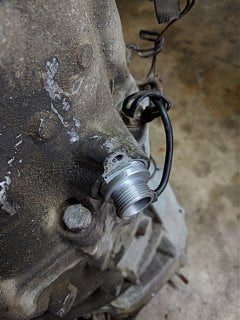
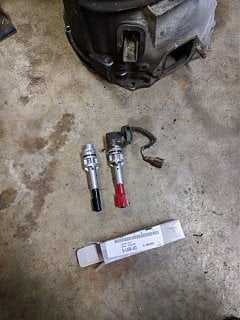
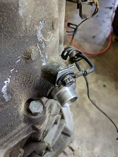
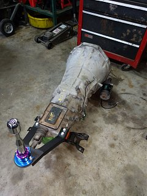
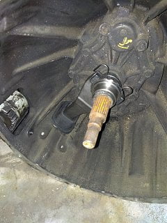

-
Yes."Its the s12's sexy over weight step daughter, the z31" -
Will the z32 5spd work with our manual speedo cable?http://z31performance.com/showthread…-My-86-Project
VG33 HE351. "No seriously, it's almost done."

-
Jared this is what I am trying to figure out. First problem is that it bolts up differently so for sure a bracket needs to be made. Second I just purchased the pinion gear assembly for the z31 30a in hopes of it working and the gears and seals sitting in the correct place. Lots of people have done the swap but either haven't found a solution or have not shared it. I shall know by the end of next week when my parts arrive -
Any info on the speedo Cesar? I just picked up a 96 Z32 tranny to swap into the Shiro. I think this is the 5th time I've read this thread looking for everything I need lol -
All 87 and up Z31 uses a speed sensor. It's only a matter of splicing two wires to get the speedo to work in your Shiro.ozzyrulez;n769257 wrote: Any info on the speedo Cesar? I just picked up a 96 Z32 tranny to swap into the Shiro. I think this is the 5th time I've read this thread looking for everything I need lolCha iro
enjoy building it yourself.
if it fails, fuck it.
at least you gave it a whirl. -
Ah good deal. Thanks for the info good sir! -
You should be fine this is only an issue for those using the digital dash -
http://www.frsport.com/Nissan-32702-…y_p_32135.html
I've been searching around looking to do this swap myself and apparently some guys have used these speed sensors. It fits in the Z32 transmission but it's a mechanical speed sensor. The Nissan part number is 32702-02G17 -
Correct. This should be the part number for 86-97 V6 2wd 5-speed Hardbody/SUV/etc. You can still get it from Nissan for ~ $34.00.Originally posted by BLITZERKING1 View Post'86 300ZXT GLL
'78 Datsun 280Z BP
'11 Saab 9-3 Aero XWD -
This is where I am at with my swap so far. I bought a 90 Z32 NA transmission from a junkyard today for $140 and a 90 Z32 NA starter for $50. The speed sensor I ordered from courtesy nissan for about $35 with shipping.     -
Does anyone know of a fix to get the digital dash working with a z32 transmission. Im using a R32 GTR speed sensor, the stock cable for the speed sensor bolts on perfect, but im having clearance issues since im doing a different swap. Its looking like I will need to cut a hole in the floor, I won't be able to bash it out enough. And the mechanical cable is too long. Perhaps Dakota digital makes a box? I could use the z32 sensor and wire it up to the stock wiring somehow? anyone ever look into this? the FSM does not really show me how the signal works for the speed sensor. Any input is appreciated. option 2 is not have a working speedometer, and just plug the hole.http://www.youtube.com/user/onefast87 -
What year z31 do you have? I have an 84 turbo with a digital dash but it has a mechanical speed sensor. I believe the mechanical speed sensor hooks up to a digital sensor that goes to the digital gauge. I think the 87's - 89's had a electronic speed sensor and 84-86's had a mechanical oneOriginally posted by onefast87 View Post -
I have an 88T with a digital dash, the sensor on the trans is like any other, but it has a mechanical cable to goes to the engine bay, then to the dash.
Im doing a LS swap and would hate to get rid of the digital dash, since I have everything else working like factory other than recording speed.http://www.youtube.com/user/onefast87 -
In case anyone was wondering, the bolt size for the starter is M10x1.5 and the nut for the stud is M10x1.0Last edited by BLITZERKING1; 03-11-2017, 12:38 PM.

Copyright © 2006–. All rights reserved. Privacy Policy